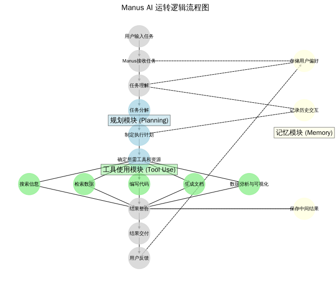

引言
随着人工智能技术的快速发展，AI代理（AI Agent）正从概念走向现实，成为AI领域的新热点。Manus作为一款由Monica.im团队开发的通用型AI代理，以其强大的任务分解和自主执行能力引起了广泛关注。本文将深入探讨Manus的架构设计和运转逻辑，帮助读者理解这一先进AI代理的工作原理。
什么是Manus
Manus是一个真正自主的AI代理，能够解决各种复杂且不断变化的任务。其名称来源于拉丁语中"手"的意思，象征着它能够将思想转化为行动的能力。与传统的AI助手不同，Manus不仅能提供建议或回答，还能直接交付完整的任务结果。
作为一个"通用型AI代理"，Manus能够自主执行任务，从简单的查询到复杂的项目，无需用户持续干预。用户只需输入简单的提示，无需AI知识或经验，即可获得高质量的输出。这种"一步解决任何问题"的设计理念使Manus区别于传统的AI工作流程，更易于普通用户使用。
核心架构
Manus的核心架构由三个主要组件构成，这三个组件协同工作，使其能够自主完成复杂任务：
1. 规划模块（Planning）
规划模块是Manus的"大脑"，负责理解用户意图，将复杂任务分解为可执行的步骤，并制定执行计划。这一模块使Manus能够处理抽象的任务描述，并将其转化为具体的行动步骤。规划模块的核心功能包括：
- 任务理解与分析
- 任务分解与优先级排序
- 执行计划制定
- 资源分配与工具选择
2. 记忆模块（Memory）
记忆模块使Manus能够存储和利用历史信息，提高任务执行的连贯性和个性化程度。该模块管理三类关键信息：
- 用户偏好：记录用户的习惯和喜好，使后续交互更加个性化
- 历史交互：保存过去的对话和任务执行记录，提供上下文连贯性
- 中间结果：存储任务执行过程中的临时数据，支持复杂任务的分步执行
3. 工具使用模块（Tool Use）
工具使用模块是Manus的"手"，负责实际执行各种操作。该模块能够调用和使用多种工具来完成任务，包括：
- 网络搜索与信息检索
- 数据分析与处理
- 代码编写与执行
- 文档生成
- 数据可视化
这种多工具集成能力使Manus能够处理各种复杂任务，从信息收集到内容创建，再到数据分析。
运转逻辑
Manus采用多代理架构（Multiple Agent Architecture），在独立的虚拟环境中运行。其运转逻辑可以概括为以下流程：
Manus AI 运转逻辑流程图
详细流程解析
- 任务接收：用户提交任务请求，可以是简单的查询，也可以是复杂的项目需求。Manus接收这一输入，并开始处理。
- 任务理解：Manus分析用户输入，理解任务的本质和目标。在这一阶段，记忆模块提供用户偏好和历史交互信息，帮助更准确地理解用户意图。
- 任务分解：规划模块将复杂任务自动分解为多个可执行的子任务，建立任务依赖关系和执行顺序。
- 执行计划制定：为每个子任务制定执行计划，包括所需的工具和资源。历史交互记录在这一阶段提供参考，帮助优化执行计划。
- 自主执行：工具使用模块在虚拟环境中自主执行各个子任务，包括搜索信息、检索数据、编写代码、生成文档和数据分析与可视化等。执行过程中的中间结果被记忆模块保存，用于后续步骤。
- 结果整合：将各个子任务的结果整合为最终输出，确保内容的连贯性和完整性。
- 结果交付：向用户提供完整的任务结果，可能是报告、分析、代码、图表或其他形式的输出。
- 用户反馈：用户对结果提供反馈，这些反馈被记忆模块记录，用于改进未来的任务执行。
技术特点
Manus具有多项技术特点，使其在AI代理领域脱颖而出：
自主规划能力
Manus能够独立思考和规划，确保任务的执行，这是其与之前工具的主要区别。在GAIA基准测试（General AI Assistant Benchmark）中，Manus取得了最新的SOTA（State-of-the-Art）成绩，这一测试旨在评估通用AI助手在现实世界中解决问题的能力。
上下文理解
Manus能够从模糊或抽象的描述中准确识别用户需求。例如，用户只需描述视频内容，Manus就能在平台上定位相应的视频链接。这种高效的匹配能力确保了更流畅的用户体验。
多代理协作
Manus采用多代理架构，类似于Anthropic的Computer Use功能，在独立的虚拟机中运行。这种架构使不同功能模块能够协同工作，处理复杂任务。
工具集成
Manus能够自动调用各种工具，如搜索、数据分析和代码生成，显著提高效率。这种集成能力使其能够处理各种复杂任务，从信息收集到内容创建，再到数据分析。
应用场景
Manus的强大功能使其适用于多种应用场景：
个性化旅行规划
Manus不仅能整合旅行信息，还能为用户创建定制化的旅行指南。例如，帮助用户规划4月份的日本之行，并提供个性化的旅行建议和详细指南。
股票分析
进行深入的股票分析，并设计视觉吸引力强的仪表板，呈现全面的股票洞察。例如，对特斯拉股票进行深入分析并创建可视化仪表板。
教育内容创建
为中学教师创建解释复杂概念（如动量定理）的视频演示，帮助教师更有效地教学。
商业决策支持
创建清晰的保险政策比较表，并提供最佳决策建议，帮助用户选择最适合的保险产品。
市场研究
通过研究和数据分析捕捉特定公司（如亚马逊）的市场情绪变化，提供过去四个季度的市场情绪分析。
与传统AI助手的区别
与传统的AI聊天机器人（如ChatGPT）相比，Manus的最大特点在于其"行动能力"。传统AI主要停留在"对话"层面，而Manus能够自主执行任务，从"思考"到"行动"，提供完整的解决方案。
具体而言，Manus的优势包括：
- 自主执行：不仅提供建议，还能直接执行任务并交付结果
- 任务分解：能够将复杂任务分解为可管理的步骤
- 工具使用：能够调用和使用各种工具完成任务
- 记忆能力：能够记住用户偏好和历史交互，提供个性化体验
- 结果导向：注重交付完整的任务结果，而非仅提供信息
结论
Manus代表了AI代理技术的重要进步，其多代理架构和三大核心模块（规划、记忆和工具使用）使其能够自主执行复杂任务，从"思考"到"行动"。这种能力使Manus成为真正的"通用型AI代理"，能够在各种场景中为用户提供有价值的服务。
随着AI技术的不断发展，我们可以期待Manus等AI代理在未来发挥更大的作用，进一步改变我们与技术交互的方式，提高工作效率，并解决更复杂的问题。